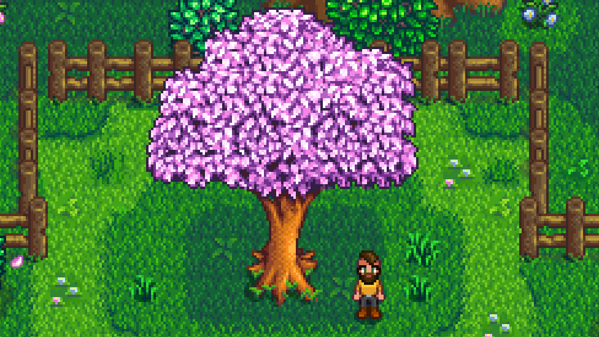
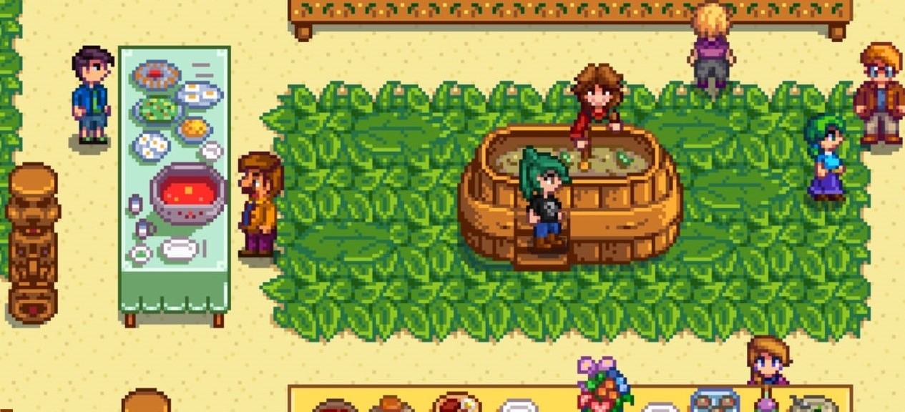
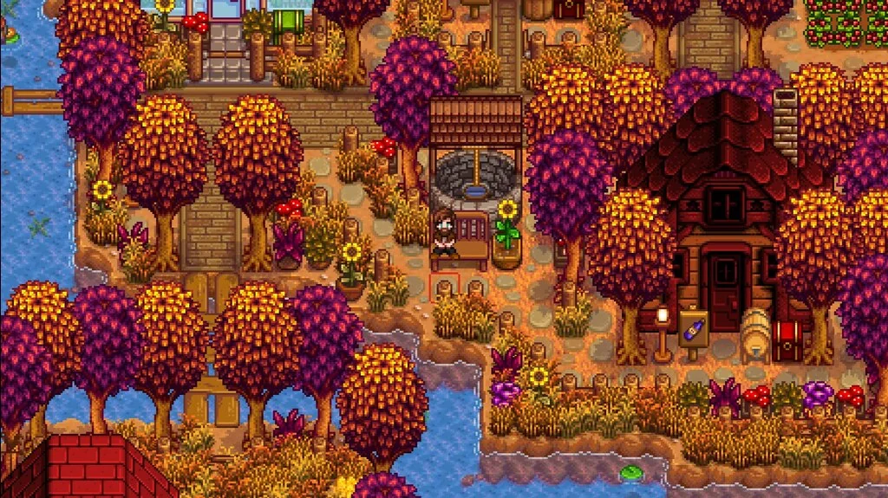
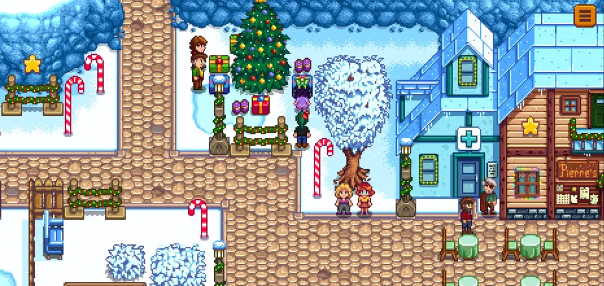

Весна

Сажаем пастернак, картофель и клубнику. Фестиваль яиц - 13 числа весны.
Лето

Растут дыни и помидоры. Луау - 11 числа лета.
Осень

Главная культура - тыква. Ярмарка Стардью - 16 числа осени.
Зима

Растения не растут. Фестиваль льда - 8 числа зимы.